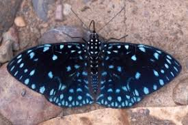
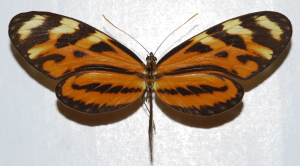

Nome: Borboleta-vítrea (Methona themisto)
Borboleta-estaladeira-azul (Hamadryas laudamia)
Nome: Borboleta-rabo-de-andorinha (Battus polydamas) - A envergadura é de 90 a 120 mm (3,5 a 4,7 pol) sem a cauda. - O topo das asas é preto com uma ampla faixa submarginal formada por grandes manchas amarelas. - A parte inferior das asas anteriores tem o mesmo padrão, enquanto as asas posteriores têm uma fileira submarginal de lúnulas vermelhas. - Esta borboleta voa de abril a novembro em três gerações no norte de sua área de distribuição, ao longo do ano em várias gerações nos trópicos. - As larvas se alimentam de espécies de plantas Aristolochia.
Nome: Borboleta-tigre (Mechanitis lysimnia)
